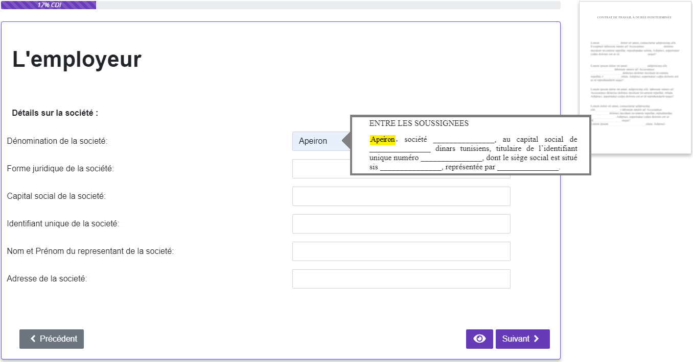

<div class="row justify-content-center">
    <div class="row justify-content-center col-11 col-sm-11 col-xl-8 pb-5">

        <div class="row justify-content-center">
            <h1 class="col-12 col-sm-11 col-xl-9 mb-5 px-0 text-center font-weight-bold responsive-title titel-commande">Automatisez la rédaction de vos documents juridiques</h1>

            <div class="col-sm-12 col-md-6 mt-3 mb-4">
                <jhi-contact-expert-form></jhi-contact-expert-form>
            </div>

            <div class="col-sm-12 col-md-6 mt-3 mb-4">
                <h5 class="font-weight-bold mt-4 titel-commande">Optimisez votre production documentaire grâce à la solution Paperlabs :</h5>
                <ul class="list-unstyled">
                    <li class="py-3 d-flex align-items-center">
                        <fa-icon [icon]="['far', 'clock']" [fixedWidth]="true" [classes]="['pap-color']" size="3x"></fa-icon>
                        <span class="pl-3 pr-3">Générez vos documents juridiques en quelques minutes</span>
                    </li>
                    <li class="py-3 d-flex align-items-center">
                        <fa-icon [icon]="['far', 'handshake']" [fixedWidth]="true" [classes]="['pap-color']" size="3x"></fa-icon>
                        <span class="pl-3 pr-3">Capitalisez le savoir-faire au sein de votre structure</span>
                    </li>
                    <li class="py-3 d-flex align-items-center">
                        <fa-icon [icon]="['far', 'file-alt']" [fixedWidth]="true" [classes]="['pap-color']" size="3x"></fa-icon>
                        <span class="pl-3 pr-3">Maîtrisez et augmentez votre production documentaire</span>
                    </li>
                </ul>

                <h5 class="font-weight-bold mt-4">Découvrez notre solution en vidéo</h5>
                <div class="embed-responsive embed-responsive-16by9">
                    <iframe  title="Solution professionelle" class="embed-responsive-item" src="https://www.youtube.com/embed/C0DPdy98e4c"></iframe>
                </div>
            </div>

        </div>

        <hr class="pap-divider mt-5 mb-4"/>

        <div class="row justify-content-center col-11 col-sm-11 col-xl-9 px-0">
            <h1 class="col-12 col-sm-11 mt-3 mb-5 px-0 text-center font-weight-bold responsive-title titel-commande">Quelle solutions apportons-nous aux professions juridiques ?</h1>
            <div class="text-justify">
                <p>La production documentaire, bien qu'essentielle à toute profession juridique, demeure sous-optimisée : rédaction "manuelle" avec Word, ré-utilisation de clauses ou de modèles préexistants, compilation de modèles, etc. Les usages actuels sont chronophages et augmentent le risque juridique.</p>

                <p>La solution Paperlabs vous permet de mieux maîtriser la rédaction de documents en automatisant leur production. </p>

                <p>Une fois le document modélisé, notre éditeur documentaire se présente sous la forme d'un questionnaire intelligent illustré ci-dessous vous permettant de construire votre document de manière dynamique.</p>
            </div>

        </div>

        <div class="row justify-content-center col-11 col-sm-11 col-xl-9 p-3 shadow-sm">
            
        </div>

        <hr class="pap-divider mt-5 mb-4"/>

        <div class="row justify-content-center col-11 col-sm-11 col-xl-9 px-0">
            <h5 class="col-12 col-sm-11 mt-3 mb-5 px-0 text-center font-weight-bold responsive-title-3 titel-commande">Comment fonctionne la solution Paperlabs ?</h5>
            
            <div class="row">
                <div class="col-4 text-center font-weight-bold">Vous nous transmettez vos documents juridiques de manière sécurisée</div>
                <div class="col-4 text-center font-weight-bold">Nos experts intègrent vos contenus à notre éditeur documentaire</div>
                <div class="col-4 text-center font-weight-bold">Générez vos documents  en quelques clics grâce à un questionnaire dynamique</div>
            </div>

        </div>

        <hr class="pap-divider mt-5 mb-4"/>

        <div class="row justify-content-center col-11 col-sm-11 col-xl-9 px-0">
            <h5 class="col-12 col-sm-11 mt-3 mb-5 px-0 text-center font-weight-bold responsive-title-3 titel-commande">Pourquoi choisir Paperlabs ?</h5>
            <div class="row justify-content-center">
                <div class="col-12 col-sm-10 col-md-4 mb-5 text-center font-weight-bold">
                    
                    Paperlabs est le <em>pionnier</em> du document juridique en Tunisie
                </div>
                <div class="col-12 col-sm-10 col-md-4 mb-5 text-center font-weight-bold">
                    
                    La technologie Paperlabs supporte tous types de documents, y compris les plus complexes
                </div>
                <div class="col-12 col-sm-10 col-md-4 mb-5 text-center font-weight-bold">
                    
                    Amélioration continuelle de votre expérience utilisateur
                </div>
            </div>

        </div>


    </div>
</div>

